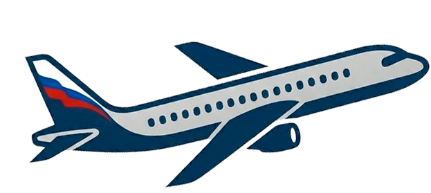
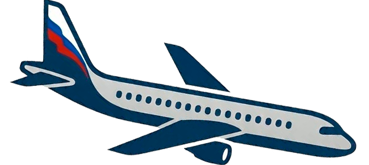

RWY Wind Limits
TAKEOFF
TAKEOFF
A/c type

RWY

PF
A320
Take off
243°
Land
КВС
Refresh
MyPath
GO HOME
RWYCC
µ
изм
ESF
µ
норм
ATIS
RWY WIDTH < 45m & CONTAMINATED
RWYCC 6
DRY
RWYCC 5
DAMP
WET: ≤ 3 mm of water
RWYCC 5S
SLUSH: ≤ 3 mm
DRY SNOW: ≤ 3 mm
WET SNOW: ≤ 3 mm
FROST
RWYCC 4
Compacted Snow: OAT ≤ -15°C
RWYCC 3
Dry Snow: > 3 mm, ≤ 50 mm
Wet Snow: > 3 mm, ≤ 12.7 mm
Compacted Snow: OAT > -15°C
Slippery Wet
RWYCC 2
Standing Water: > 3 mm
Slush: > 3 mm
RWYCC 1
Ice: Cold and Dry
RWYCC -
Wet Ice
Water on top of Compacted Snow
Dry/Wet Snow over Ice
A320
A321
A320
winglet
A321
winglet
A320
NEO
A321
NEO
Magnetic RWY course
000
1
2
3
4
5
6
7
8
9
0
OK
2П
80%
2П
50%
(стажер ИЛИ <1000h)
MANUAL LANDING
CAT2
AUTOLAND
AUTOROLL
OK
SELECT CONDITION
5
5S